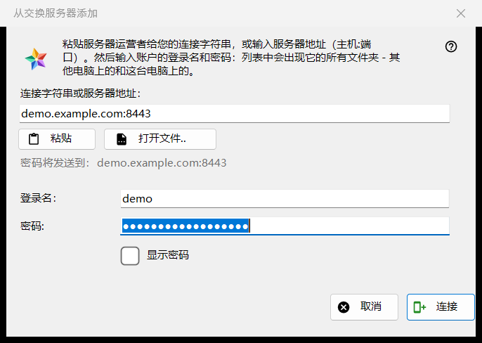
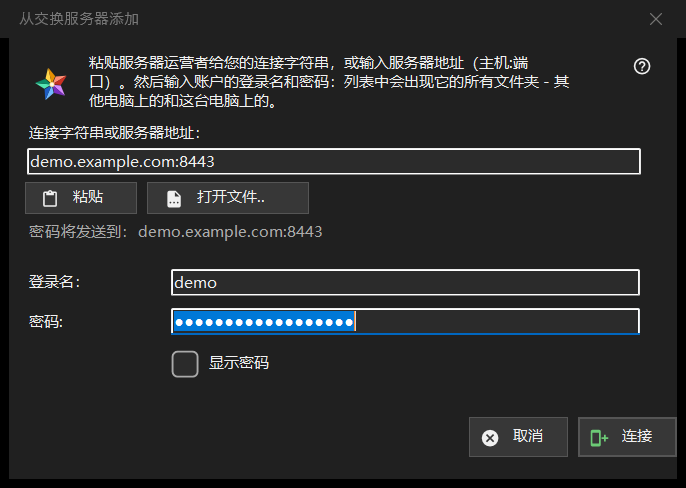

从交换服务器添加
用途说明
把这台电脑连接到交换服务器上的一个账户，使该账户所有设备的文件夹都出现在资源列表中。它从资源列表「我的设备」区域中的「从交换服务器添加..」按钮打开，也会在你把连接字符串或文件拖放到查看器上，或在文件夹框中输入连接字符串时打开。


操作顺序
- 粘贴服务器运营者提供的连接字符串，或以 host:port 的形式输入地址，或点击「打开文件..」。
- 检查「密码将发送到：..」这一行：该地址是密码唯一会去的地方。
- 输入用户名和密码。
- 点击「连接」。
- 如果程序询问服务器的证书，请把指纹与运营者告知的指纹进行比对。
界面元素
连接字符串或地址
第一个框接受连接字符串（以 FMSEXCH1: 开头）或 host:port 形式的地址。「粘贴」会从剪贴板填入，可以是文本，也可以是二维码图片；「打开文件..」读取 .fmsexch 文件或二维码图片。粘贴只是填写表单：在你点击「连接」之前什么都不会发送。框下方的一行显示密码将发往何处；网址、文件夹代码或损坏的字符串会在那里被直白地拒绝。
用户名和密码
当字符串中带有用户名时，「用户名：」会自动填入。「密码：」是遮盖显示的；「显示密码」可将其显示出来。点击「连接」时，在第一个字节离开电脑之前，密码框就会被清空。状态栏显示进度，失败时显示原因：用户名或密码不对、尝试次数过多、服务器没有应答。
邀请字符串
属于邀请的字符串已经指明了服务器，并把窗口切换为创建账户：会出现「再次输入密码：」和一条密码规则说明（至少 10 个字符，包含一个大写和一个小写拉丁字母以及一个数字），按钮变为「创建账户」。最终以服务器的规则为准。
服务器的证书
如果证书未知，会弹出一个问题，显示其指纹，并询问是否信任该服务器并记住它；默认答案是「否」。如果字符串指定了指纹，而服务器出示的是另一个，则两者都会显示，不会记住任何内容，也不会发送密码。
重新登录
为已有的服务器条目重新登录而打开时，窗口以只读方式显示地址和用户名，该条目所记住的指纹是信任的锚点。